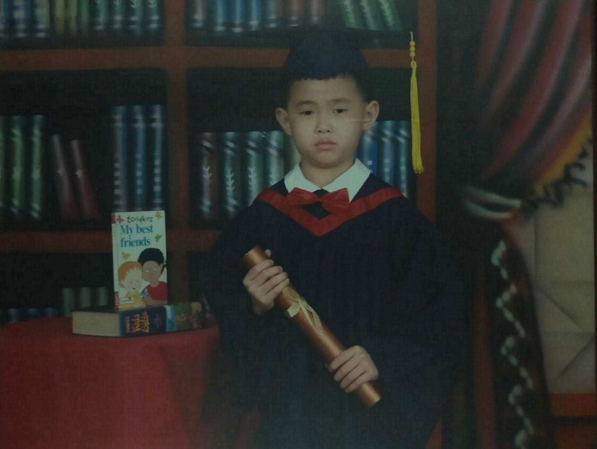
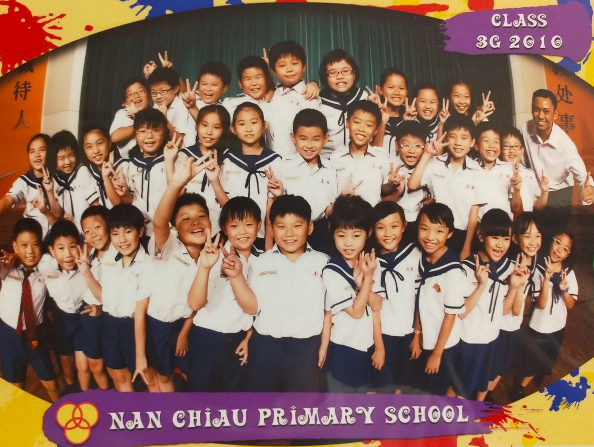
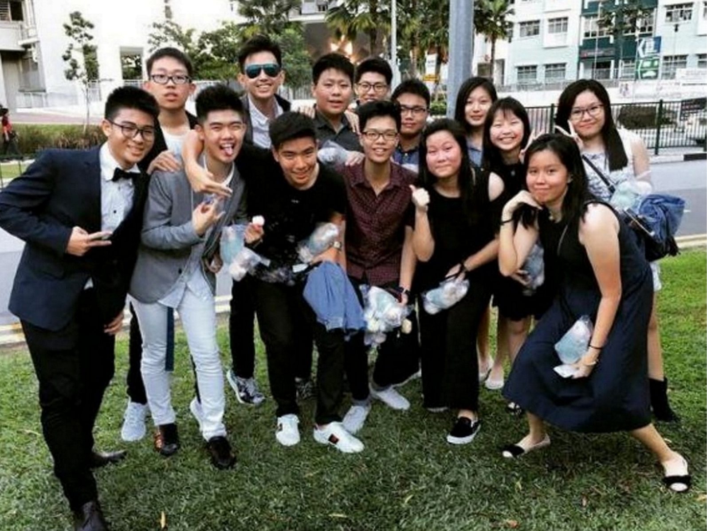
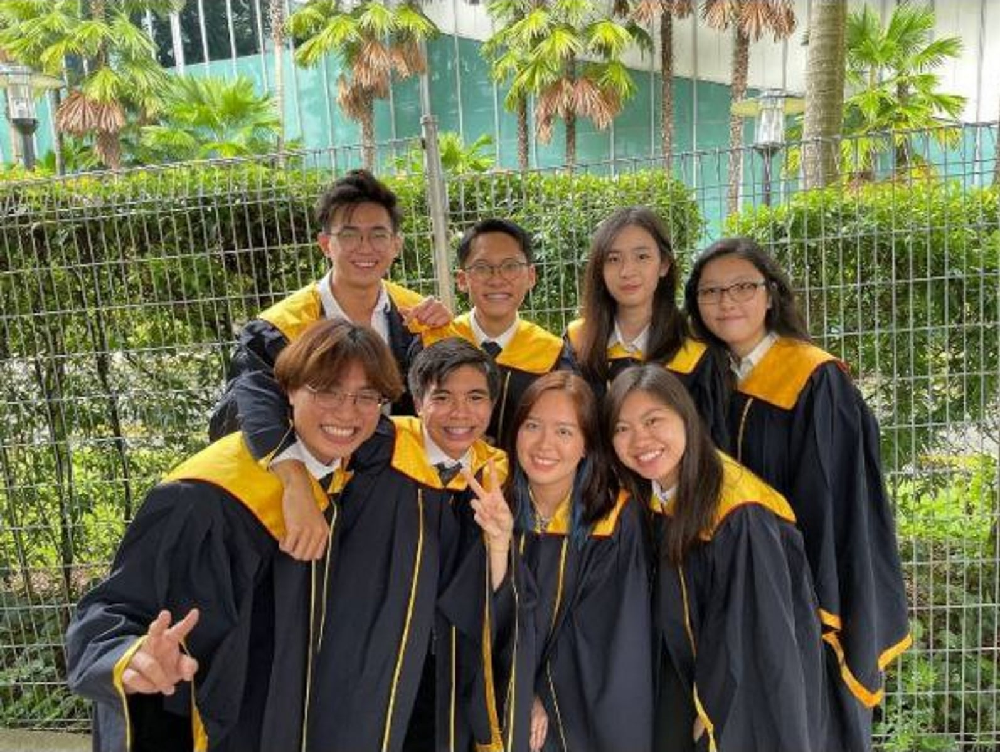

We used to play this game where we competed who was able to create the most eraser dust by the end of the day. I remember rushing to finish my class work so that I had an advantage; more time to make eraser dust. I distinctly recall creating a method of generating eraser dust quickly and that was to rub my ruler against my oddly gigantic square-shaped eraser, essentially slicing it in half. I remember clearly, going home that day and my mom was devastated when she saw my precious eraser sawed in half.
Tots House
[ 2003 - 2006 ]
Story Time: Eraser Dust
Lessons Learnt: Effort & Hard Work
Everyday after school, my mom will come pick me up. However, before going back home, we would always stand in the short alleyway beside my classroom staring accross the street. That was my teacher's bus stop. I remember vividly, my mom would always tell me that I have to study hard because my teachers travelled far and wide to teach me. Whereas, I just a minute away from my school. My mom showed me my teachers' efforts and hence, I should reciprocate my efforts too and work hard. Then, only after waving my teachers off would we head back home.
Nan Chiau Primary School
[ 2007 - 2012 ]
Story Time: Kaya Bread
I remember the 1 constant I had throughout these 6 years was my lunchbox. Everyday for 6 years, my endearing mother would pack 2 slices of white bread with Kaya (Coconut Jam) spread folded in half in the shape of a rectangle. It was a lovely recess meal for the first couple of days, maybe weeks. However, 6 years of consuming white bread has completely detered me away from it; developing a hatred and distaste for white bread.
Lessons Learnt: Goals & Aspirations
Nan Chiau Primary School was a very good school and one of the five Singapore Hokkien Huay Kuan Schools. However, I wasn't a particularly good student. I consistently scored terribly throughout my 6 years there and I was always the second last scorer in my class.
Whenever a mid-term or end-of-year examination paper required my parents' signature, I would hide my test paper while he was at home. And while he was busy at work, I would neatly place it somewhere to catch his attention, avoiding and prolonging the inevitable scolding.
In year 5, my dad proposed a wager to me. He told me that if I was top 10 scorer within my class, he would buy me any 3 toys that I wanted. I suppose his bet worked because I managed to scored the 11th place. Lesson learnt, you need a reason to study or a goal to strive for.
Pei Hwa Secondary School
[ 2013 - 2018 ]
Story Time: Lucky
One weekend, my father decided to drive me around to the nearby schools for comparison. To be frank the schools looked largely similar to me. Back then, I was incredibly ignorant and didn't know much about technology and the internet. Thus, I chose the schools with the highest entry score that was within my range (212 points) and got enrolled into Pei Hwa Secondary School, your generic neighbourhood school.
During our CCA fair, I tried joining the track & field team as I did in primary school. Unfortunately, there wasn't one. Hence, being fearful of poor performance in other sports and with an interest in robots, I joined Robotics.
Lessons Learnt: Responsibility
I am very thankful and glad that I spent my 4 years there. I've met people that are beyond incredible and made precious friends. I am very grateful for being in Pei Hwa not because it's was an espcially good school academically but because of all the values and principles that I learnt there, which forged me into who I am today. I was pretty protected as a child so, this was really my first experience to learning; making my own mistakes and learning first hand.
I would say that this period was one of the happiest moments of my life. For 4 years, everyday after school, my friends and I would mingle about and enjoy our youthful days. But it wasn't just fun and games. Meaningful lessons were learnt as well. I was taught the value of rivalry and friendship; where my friends and I would teach one another and compete to see who did better. For the first time in my life, I was scoring a decent grade. I was getting a few As and placing 11th, 8th and 4th within my class.
I'll never forget this phrase my friend shared with me: "There are no careless mistakes". This one phrase in essence is telling you to step up to responsibility. Admitting your flaws and take responsibility to improve on it. So, the next time you think you made a silly mistake or something slipped your mind, think again.
Singapore Polytechnic
[ 2019 - 2021 ]
Story Time: Heroes
The first question for a secondary school graduate is whether they want to enroll in a polytechnic or a Junior College. I ultimately decided to go for a polytechnic because I couldn't enroll in a good JC and I'm not very good at my studies. I feared that I would not be able to enroll in any unverisities. Thus, I picked the safer option.
Now as for the polytechnic course, it's a tough decision. You're picking an area of expertise where a majority of which you've never experienced before. Therefore, I did what any sensible human being would do and listed down my heros, inspirations and role models. However, I quickly ran into a wall. All I did for the past 17 years was watching youtube, movies, television and playing video games. The only "people" I knew where fictional characters. So, my list quickly got filled up with youtubers and marvel characters. Now, I'm mature enough to know that I would never become a super soldier or develop super powers. Thus, my list shortened as fast as it grew. And at the end of it, I was left with 3 names; Micheal Reeves, Mark Rober, Tony Stark.
The commonality of the 3 is that they study some form of engineering. However, I focused solely on Tony Stark. Because well... he's Iron Man. Therefore my rationale was this, Tony was not only a brilliant inventor, he was also a filthy rich and successful businessman. I thought that he probably needed a whole lot of money to make his billion dollar suit. Thus, I picked business. With my unfathomable rationale and some encouragement from my best friend to join the same course he was going for, I opted for Ngee Ann Polytechnic's business studies but failed and ended up in the Singapore Polytechnic's equivalent.
Lessons Learnt: Embrace Failures
In polytechnics, there really isn't any external forces pushing or motivating you to study. It largely comes from self discipline. Even if your family and friends do encourage you, any strong external pressure that motivates you are self sourced. Therefore, alot of self discipline and awareness is required to keep you proficient throughout the year (as GPAs are calculated cumulatively). Additionally, there are alot of team and project work which require teamwork, communication, understanding, flexibility and a whole lot of other skills. So as you can imagine, that's a pretty big jump from your comfortable secondary school.
I would consider myself extremely lucky. Because within my friends and rivals, I would have never guessed that I would be the only one to achieve a 4.0 GPA. Never in my life would I think I can manage such standards. This first semester really pushed me in my studies. Like a snowball effect or a butterfly fluttering it's wings, this first semester propelled my work ethnic to incredible heights. I managed to maintain my GPA for 2 consecutive years, getting multiple straight As and distinctions, before scoring a B+ and plummenting my motivation straight into the ground.
To be fair, I was already very stressed, pressured and overworked. But this single B+ grade has made me jaded and revived my old lazy habits. The following semester, I scored yet another B+. Right before my final semester, I finally snapped out of my own self-pity and found the discipline to study hard again and managed to attain an overall GPA of 3.969
To most people, this number seems absurd and very admirable. However, while my GPA was the top of my cohort, I didn't have much CCA points. Although I participated rigorously in my first year, I didn't manage to hit the necessary requirements for a CCA gold medal. In the end, I graduated with a Diploma with merit, maintained as a director's honor roll student for 3 years, attained a bronze CCA medal and some happy memories.
In life, you can't only focus on one area but have to maintain a balance. You can't be a perfectionist and run from failures forever. When failure inevitably arrives, embrace it and learn from it.
While there are some regrets and missed opportunities here and there, I'm happy with how I spent my time in SP.